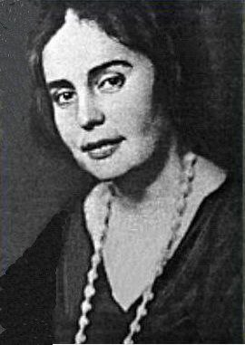

Євген Плужник
1898-1936
«Та це ж розмова лиш! – Але розмова довга: почнеш у Києві, кінчиш на Соловках!»
1898-1936
«Та це ж розмова лиш! – Але розмова довга: почнеш у Києві, кінчиш на Соловках!»
Цей Плужників жарт якнайкраще охарактеризовує епоху, яка, зрештою, таки вбиває поета.
Євген Плужник – постать особливої ваги в історії української літератури та культури загалом. Як яскравий представник Розстріляного Відродження, він уособлює трагічну долю цілого покоління талановитих митців, чия творчість була насильно обірвана. Його багатогранний талант проявився не лише в поезії, що відзначається витонченістю, глибоким ліризмом та філософським осмисленням буття, а й у прозі, драматургії та перекладацькій діяльності. Кожен аспект його творчості засвідчує високу інтелектуальну культуру автора, його прагнення до художньої досконалості та глибоке розуміння національної і світової літературної традиції.
Поезія Євгена Плужника вражає своєю майстерністю, тонким відчуттям слова та вмінням передати найменші порухи душі. Його імпресіоністична манера письма, з її акцентом на миттєвих враженнях, нюансах кольору та світла, дозволяє читачеві відчути глибину емоцій та переживань ліричного героя. Справедливо вважаючись одним з найвидатніших імпресіоністів ХХ століття, Плужник зумів поєднати в своїй творчості ліричну чутливість з інтелектуальною насиченістю, створивши неповторний поетичний світ, який і сьогодні захоплює своєю красою та глибиною. Його внесок у розвиток української літератури є неоціненним, а його творча спадщина залишається важливим джерелом натхнення для наступних поколінь митців.
Євген Плужник народився 26 (14) грудня 1898 року у слободі Кантемирівці Богучарського повіту Воронезької губернії.
Батько майбутнього поета походив із селян Полтавської губернії, землі не мав, заробляв, працюючи у фірмі, що торгувала сукном і вовняними матеріалами. Мати – була із заможної купецької родини. Вона хворіла на сухоти і померла молодою, залишивши шестеро дітей. Найменшому, Євгенові, тоді минуло 7 років.
Батько прагнув дати синам і дочкам середню й вищу освіту, терпляче спрямовував Євгена до науки – переводив з гімназії до гімназії, з одного міста до іншого (Воронеж, Богучар, Ростов, Бердянськ…), коли сина відраховували за пропуски занять з тих предметів, які його не цікавили та участь у нелегальних гуртках.
Після десяти років такого навчання, у 1918 році юнак нарешті одержав атестат. За цей час, годинами просиджуючи в бібліотеці, він самотужки ґрунтовно вивчав філологію, знайомився із кращими зразками світової літератури, почав віршувати російською мовою.
У 1918 році Плужники переїхали на Полтавщину, де протягом двох років від туберкульозу померли одна з його сестер, брат і батько.
У революційну добу Євген учителював на Миргородщині – викладав мову і літературу, організовував театральні гуртки. Саме на Полтавщині поет поринув у стихію української мови й почав писати свої твори українською.
З 1921 року він жив у Києві, де його фінансово підтримувала старша сестра Ганна. Через соціальне походження – не пролетарське і не селянсько-незаможницьке – він не міг вступити до Київського інституту народної освіти (КІНО), тож спочатку навчався у Київському ветеринарно-зоотехнічному інституті, але невдовзі покинув його і вступив до Київського музично-драматичного інституту імені М. В. Лисенка. Його теж не судилося закінчити через хворобу легень. Заробляючи на прожиття, працював у різних сферах: продавав газети, учителював, редагував письменницькі тексти, укладав словник ділового мовлення і поетичну антологію, займався перекладами. У той час були й періоди безробіття та напівголодного існування.
У 1923 році Плужник одружився з Галиною Коваленко, яку кохав зі студентських років. Вона стала для поета не тільки вірною дружиною, а й відданою подругою, яка підтримувала Євгена Плужника під час незгод і нападів хвороби, залучала його, делікатного й скромного, до кола київських літераторів, спонукала публікувати результати творчої праці.
Колеги по перу – товариші по літературному угрупуванню «Аспис», а згодом «Ланка» і «МАРС» – Валер’ян Підмогильний, Григорій Косинка, Дмитро Фальківський, Борис Антоненко-Давидович, Микола Бажан, Володимир Сосюра, Максим Рильський, Павло Тичина – часто гостювали в помешканні Плужників. Вони високо цінували талант Плужника, шанували його за освіченість, культуру, правдивість та іронічність.
У липні 1926 року в Євгена Плужника раптово відбулося загострення туберкульозу – горлом пішла кров. Лікарі прогнозували швидкий і неминучий летальний кінець. Але після тривалого лікування Плужник повернувся до творчості й почав «життя вдруге». Літературознавець Л. Скирда зазначав: «Відтоді і назавше його життя підлягало суворому режиму: літо на Полтавщині – у родичів дружини, осінь – у Криму, весна – на Кавказі». З 1923 року Євген працював у різних редакціях перекладачем, а вечорами продовжував самоосвіту й писав вірші.
Після того, як у листопаді 1934 року за сфабрикованою справою заарештували його друзів-літераторів – Григорія Косинку і Дмитра Фальківського, – Плужник теж очікував арешту. 4 грудня близько півночі він, почувши шум автомобіля біля свого дому, сказав дружині: «Це по мене», – і почав одягатися. Зайшли троє, пред’явили ордер на арешт, зробили обшук.
Л. Череватенко – дослідник життя і творчості поета, у своїй роботі відтворив ту фатальну подію так: «Коли процедуру закінчили і можна було вже йти, Є. Плужник несподівано попросив дозволу побути ще трохи вдома: він хоче попрощатися з кімнатою. Ті, що прийшли по нього, перезирнулися, але дозволили. Євген Павлович сів на свою канапу і похилив обличчя в долоні… Так він просидів кілька хвилин. Йому не заважали. Потім Є. Плужник підвівся і промовив: «Я готовий». І поцілував дружину».
Співавтор дослідження «З порога смерті: Письменники України – жертви сталінських репресій» (К., 1991) В. Мельник зазначає: «Ордер на арешт Є. Плужника і трус у його квартирі був виписаний 4.ХІІ.1934 року. Але ще 2 грудня уповноважена секретно-політичного відділу НКВС УРСР Гольдман скомпоновала постанову, в якій Плужник звинувачувався в тому, що він «є членом контрреволюційної організації, був зв’язаний з націоналістичною групою письменників, вів контрреволюційну роботу. Знав про практичну діяльність організації з підготовки терактів»
27–28 березня 1935 року відбувся судовий процес виїзної Військової комісії Верховного Суду СРСР. Вирок – розстріл, пізніше його було замінено на десятилітнє ув’язнення у спецтаборах. Є. Плужник сприйняв заміну розстрілу на тривале ув’язнення як надію на життя, мріючи коли-небудь таки повернутися до коханої дружини і творчої роботи. У Соловецькому таборі, де поет відбував покарання, він перебував у загальній камері в умовах тісноти, задухи, антисанітарії, холоду. Саме там у нього знову відбулося загострення туберкульозу, він дійшов до крайнього виснаження і був переведений до табірного лазарету. Писав дружині теплі, світлі, самоіронічні, обнадійливі листи. Останній був написаний чужою рукою під диктовку. Знесилений хворобою Плужник тремтячим пером дописав лише одну фразу: «Присягаюсь тобі, я все одно виживу!». Дружина отримала цього листа 29 лютого 1936 року, а пізніше дізналася, що Євгена Павловича не стало 2 лютого, у день народження його товариша – письменника Валер’яна Підмогильного, якого розстріляли пізніше – в 1937 р.
За спогадом санітара-українця М. Тайги, який опікувався Плужником у лазареті, в останню годину життя Євген Павлович попросив його принести воду: «Я вмиюся, пригадаю Дніпро і вмру». Занурив долоні в миску з крижаною водою, помалу омив своє лице, затримав руки біля очей, наче прагнув щось найголовніше оживити й зафіксувати в уяві. Не поспішаючи, витерся рушником. Ліг, сховав руки під ковдру, випростався і склепив повіки. Санітар вкрив його до самого підборіддя і на хвилинку вийшов, щоб винести миску з водою. А коли повернувся, поет уже не дихав».
Тіло з биркою №1137 загорнули в лахміття, у санки впрягся з/к Підмогильний та ще декілька політв’язнів, і повезли на табірне кладовище. Могила поета не збереглася. Євген Плужник був реабілітований у серпні 1956 року, але аж до 1966 р. про його ім’я та творчість все ще заборонялось згадувати. Умовна могила поета знаходиться на Байковому кладовищі в Києві, 9 ділянка.
У 1992 році іменем Євгена Плужника названа Центральна районна бібліотека Шевченківського району м. Києва.

На будинку в Києві на Прорізній вулиці, 18/1, де у 1923–1934 роках мешкав Євген Плужник, встановлена меморіальна дошка.
Вулиці, названі на честь Євгена Плужника, існують в багатьох населених пунктах України.
26 грудня 2018 року на державному рівні в Україні відзначалася пам'ятна дата – 120-ліття з дня народження Євгена Плужника – поета, прозаїка, перекладача, драматурга.
Твори поета введені у програму з української літератури середньої школи.
1. Плужник був виключно поетом-ліриком, зосередженим лише на особистих переживаннях.
Хоча лірика займає важливе місце в його творчості, Плужник також писав прозу (роман "Недуга"),
п'єси ("У дворі на передмісті", "Загибель ескадри"), займався перекладацькою діяльністю (перекладав твори
А. Чехова, М. Горького, Л. Толстого). Його поезія часто сягає філософських та суспільних узагальнень.
2. Творчість Плужника була маловідомою за його життя.
За свого життя Плужник видав кілька поетичних збірок ("Дні", "Проміння днів", "Рівновага"), які
отримали схвальні відгуки критики та були відомі серед читацької аудиторії. Його п'єси ставилися в театрах.
3. Уся творчість Плужника сповнена лише песимізму та розчарування.
Хоча в його творах присутні трагічні мотиви, вони також містять глибоку любов до життя, віру в красу природи
та силу людського духу. Його поезія часто сповнена світлих ліричних моментів.
4. Плужник не мав яскравих особистісних рис і був непримітною фігурою серед інших літераторів Розстріляного Відродження.
Спогади сучасників змальовують Плужника як людину глибокого розуму, тонкої душевної організації та високої культури.
Його поезія вирізняється індивідуальним стилем і глибоким ліризмом, що робить його постать яскравою та незабутньою в плеяді
митців Розстріляного Відродження.